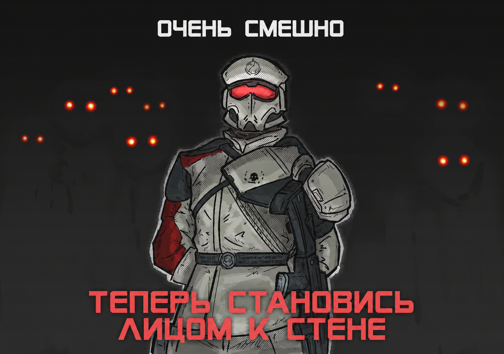

<!DOCTYPE html>
<html lang="ru">

<head>
    <meta charset="UTF-8">
    <meta name="viewport" content="width=device-width, initial-scale=1.0">
    <title>Имени новотей Лексики</title>
    <link rel="icon" type="image/png" href="assets/icon.png">
    <style>
        *,
        *::before,
        *::after {
            margin: 0;
            padding: 0;
            box-sizing: border-box;
        }

        body {
            background-color: #0a0a0a;
            color: #e0e0e0;
            font-family: 'Segoe UI', Tahoma, Geneva, Verdana, sans-serif;
        }

        .news-container {
            width: 50%;
            max-width: 720px;
            margin: 0 auto;
            padding: 32px 0;
        }

        .news-card {
            cursor: default;
            animation: fadeIn 0.35s ease;
        }

        @keyframes fadeIn {
            from {
                opacity: 0;
                transform: translateY(12px);
            }

            to {
                opacity: 1;
                transform: translateY(0);
            }
        }

        .news-title {
            font-size: 1.6rem;
            font-weight: 600;
            color: #f0f0f0;
            margin-bottom: 20px;
            line-height: 1.4;
        }

        .news-title::before {
            content: "\258E";
            color: #6c6c9e;
            margin-right: 10px;
        }

        .news-text {
            font-size: 1rem;
            line-height: 1.8;
            color: #b0b0b8;
        }

        .news-text p {
            margin-bottom: 14px;
        }

        .news-text p:last-child {
            margin-bottom: 0;
        }

        .news-text .highlight {
            color: #d4d4f5;
            background: linear-gradient(90deg, rgba(80, 80, 160, 0.15), transparent);
            padding: 0 4px;
            font-weight: 500;
        }

        .news-text .quote {
            border-left: 3px solid #4a4a7a;
            padding: 10px 20px;
            margin: 16px 0;
            color: #9090a8;
            font-style: italic;
            background: rgba(60, 60, 120, 0.06);
            border-radius: 0 6px 6px 0;
        }

        .news-text .code-inline {
            font-family: 'Cascadia Code', 'Fira Code', 'Consolas', monospace;
            font-size: 0.85rem;
            background: #0d0d14;
            border: 1px solid #1a1a2a;
            border-radius: 4px;
            padding: 1px 6px;
            color: #b8b8d8;
        }

        .news-text strong {
            color: #d0d0e8;
            font-weight: 600;
        }

        .news-text em {
            color: #a0a0b8;
        }

        .news-text a {
            color: #7a7acc;
            text-decoration: none;
            border-bottom: 1px dashed #3a3a6a;
            transition: color 0.2s, border-color 0.2s;
        }

        .news-text a:hover {
            color: #9a9aec;
            border-bottom-color: #7a7acc;
        }

        .news-text .news-image {
            display: block;
            width: 100%;
            height: auto;
            border-radius: 8px;
            margin: 18px 0 4px;
            border: 1px solid #1e1e2a;
        }

        .news-text .news-image-sm {
            display: block;
            max-width: 60%;
            height: auto;
            border-radius: 8px;
            margin: 18px auto 4px;
            border: 1px solid #1e1e2a;
        }

        .news-banner-wrap {
            width: 100vw;
            margin-left: calc(-50vw + 50%);
            margin-right: calc(-50vw + 50%);
            overflow: hidden;
        }

        .news-banner-wrap .news-banner {
            display: block;
            width: 100%;
            height: auto;
            border: none;
            border-radius: 0;
        }

        .news-banner-start {
            margin-top: -32px;
            margin-bottom: 24px;
        }

        .news-banner-start .news-banner {
            display: block;
        }

        .news-text .image-caption {
            font-size: 0.78rem;
            color: #555;
            text-align: center;
            margin-bottom: 10px;
            letter-spacing: 0.3px;
        }

        .news-sidebar {
            position: fixed;
            right: 12px;
            top: 0;
            bottom: 0;
            display: flex;
            flex-direction: column;
            align-items: center;
            gap: 14px;
            overflow-y: auto;
            padding: 30vh 4px 4px;
            z-index: 110;
            scrollbar-width: thin;
            scrollbar-color: #2a2a3a transparent;
        }

        .news-sidebar::-webkit-scrollbar {
            width: 3px;
        }

        .news-sidebar::-webkit-scrollbar-track {
            background: transparent;
        }

        .news-sidebar::-webkit-scrollbar-thumb {
            background: #2a2a3a;
            border-radius: 2px;
        }

        .news-icon {
            width: 48px;
            height: 48px;
            border-radius: 50%;
            border: 2px solid #2a2a3a;
            cursor: pointer;
            flex-shrink: 0;
            position: relative;
            transition: border-color 0.25s, box-shadow 0.25s, transform 0.2s;
            background: #111118;
            box-shadow: 0 0 0 2px #0a0a0a, 0 0 12px rgba(0, 0, 0, 0.7);
        }

        .news-icon img {
            width: 100%;
            height: 100%;
            object-fit: cover;
            display: block;
            border-radius: 50%;
        }

        .news-icon:hover {
            border-color: #6c6c9e;
            box-shadow: 0 0 16px rgba(80, 80, 160, 0.3);
            transform: scale(1.1);
        }

        .news-icon.active {
            border-color: #8a8acc;
            box-shadow: 0 0 20px rgba(80, 80, 160, 0.45);
        }

        .news-tooltip {
            position: fixed;
            background: #1a1a2a;
            color: #d0d0e0;
            font-size: 0.78rem;
            padding: 6px 14px;
            border-radius: 6px;
            white-space: nowrap;
            pointer-events: none;
            border: 1px solid #2a2a3a;
            z-index: 200;
            visibility: hidden;
            opacity: 0;
            transition: opacity 0.15s, visibility 0.15s;
        }

        .news-tooltip.visible {
            visibility: visible;
            opacity: 1;
        }

        .news-tooltip::after {
            content: "";
            position: absolute;
            right: -6px;
            top: 50%;
            transform: translateY(-50%);
            border-left: 6px solid #1a1a2a;
            border-top: 5px solid transparent;
            border-bottom: 5px solid transparent;
        }

        .footer {
            position: fixed;
            bottom: 0;
            left: 0;
            width: 100%;
            padding: 20px 0;
            text-align: center;
            border-top: 1px solid #1a1a2e;
            font-size: 0.7rem;
            color: #444;
            letter-spacing: 1px;
            background-color: #0a0a0a;
            z-index: 100;
        }

        ::-webkit-scrollbar {
            width: 6px;
        }

        ::-webkit-scrollbar-track {
            background: #0a0a0a;
        }

        ::-webkit-scrollbar-thumb {
            background: #2a2a3a;
            border-radius: 3px;
        }

        ::-webkit-scrollbar-thumb:hover {
            background: #3a3a5a;
        }

        html,
        body {
            overflow-x: hidden;
        }

        @media (max-width: 900px) {
            .news-container {
                width: 70%;
            }
        }

        @media (max-width: 600px) {
            .news-container {
                width: 88%;
                padding: 20px 0;
            }

            .news-title {
                font-size: 1.25rem;
            }

            .news-sidebar {
                right: 6px;
                bottom: 0;
                padding: 20vh 4px 4px;
            }

            .news-icon {
                width: 38px;
                height: 38px;
            }

            .news-tooltip {
                display: none !important;
            }
        }
    </style>
</head>

<body>
    <main class="news-container">
        <div class="news-feed" id="newsFeed"></div>
    </main>

    <nav class="news-sidebar" id="newsSidebar"></nav>

    <div class="news-tooltip" id="newsTooltip"></div>

    <footer class="footer">
        Design by Lexxikka &middot; idea from telegraph
    </footer>

    <script>
        console.log("Design by Lexxikka, idea from telegraph");

        const newsData = [
            {
                id: '0019',
                title: 'Искусственный интеллект научился предсказывать землетрясения',
                text: `
                    <p>
                        Нейросеть <strong>DeepQuake</strong>, разработанная в <strong>Стэнфордском университете</strong>,
                        достигла точности <span class="highlight">87%</span> в предсказании землетрясений
                        магнитудой выше 5 баллов за <em>72 часа до события</em>.
                    </p>
                    <div class="quote">
                        "Мы обучили модель на данных сейсмологических станций за последние 30 лет.
                        ИИ улавливает паттерны, которые недоступны человеческому анализу."
                    </div>
                    <p>
                        Система уже проходит тестирование в <strong>Японии</strong> и <strong>Калифорнии</strong>.
                        Внедрение технологии может спасти тысячи жизней.
                    </p>
                `
            },
            {
                id: '0018',
                title: 'Представлен первый в мире биопроцессор на клетках мозга',
                text: `
                    <p>
                        Швейцарский стартап <strong>NeuroSyn</strong> представил <span class="highlight">биологический процессор</span>,
                        использующий выращенные в лаборатории нейроны для вычислений. Чип потребляет
                        в <em>10 000 раз меньше энергии</em>, чем традиционные кремниевые аналоги.
                    </p>
                    <p>
                        Процессор способен обучаться в реальном времени и уже продемонстрировал
                        высокую эффективность в задачах <strong>распознавания образов</strong>.
                    </p>
                `
            },
            {
                id: '0017',
                title: 'Китай запустил крупнейшую в мире плавучую солнечную ферму',
                text: `
                    <p>
                        В провинции <strong>Шаньдун</strong> введена в эксплуатацию плавучая солнечная
                        электростанция мощностью <span class="highlight">2,1 ГВт</span> — крупнейшая в мире.
                    </p>
                    <p>
                        Станция занимает площадь <em>45 км²</em> на поверхности водохранилища
                        и способна обеспечить электроэнергией <strong>1,5 млн домохозяйств</strong>.
                    </p>
                `
            },
            {
                id: '0016',
                title: 'Разработан аккумулятор с плотностью энергии 900 Вт·ч/кг',
                text: `
                    <p>
                        Инженеры <strong>MIT</strong> создали прототип литий-серного аккумулятора
                        с рекордной плотностью энергии <span class="highlight">900 Вт·ч/кг</span> —
                        вдвое больше лучших литий-ионных аналогов.
                    </p>
                    <div class="quote">
                        "Мы решили проблему деградации серного катода с помощью новой
                        углеродной наноструктуры."
                    </div>
                    <p>
                        Коммерциализация технологии ожидается в <em>2027–2028 годах</em>.
                    </p>
                `
            },
            {
                id: '0015',
                title: 'Открыт новый вид глубоководных осьминогов у берегов Антарктиды',
                text: `
                    <p>
                        Международная экспедиция обнаружила на глубине <strong>4 500 метров</strong>
                        новый вид осьминогов, получивший название <span class="highlight">Octopus antarcticus profundis</span>.
                    </p>
                    <p>
                        Уникальная особенность — способность выживать при температуре воды
                        <em>до −2°C</em> благодаря особому белку-антифризу в крови.
                    </p>
                `
            },
            {
                id: '0014',
                title: 'В Японии запущен первый поезд на магнитной левитации 7-го поколения',
                text: `
                    <p>
                        Компания <strong>JR Central</strong> представила поезд <span class="highlight">SCMaglev L0</span>,
                        который развил скорость <strong>623 км/ч</strong> на тестовом участке.
                    </p>
                    <p>
                        Новая система левитации снижает энергопотребление на <em>30%</em>
                        по сравнению с предыдущим поколением. Запуск регулярного сообщения
                        по маршруту <span class="code-inline">Токио — Осака</span> запланирован на <strong>2034 год</strong>.
                    </p>
                `
            },
            {
                id: '0013',
                title: 'Учёные впервые наблюдали квантовую запутанность в живых клетках',
                text: `
                    <p>
                        Исследователи из <strong>Оксфорда</strong> впервые зафиксировали
                        <span class="highlight">квантовую запутанность</span> между молекулами
                        внутри живых бактерий <em>E. coli</em>.
                    </p>
                    <div class="quote">
                        "Это открытие ставит под вопрос границу между квантовым и классическим
                        миром в биологических системах."
                    </div>
                    <p>
                        Результаты могут найти применение в <strong>квантовой биологии</strong>
                        и создании сверхчувствительных биосенсоров.
                    </p>
                `
            },
            {
                id: '0012',
                title: 'Google представил квантовый компьютер с 10 000 кубитов',
                text: `
                    <p>
                        <strong>Google Quantum AI</strong> анонсировал процессор <span class="highlight">Sycamore 3</span>,
                        содержащий <strong>10 000 физических кубитов</strong> — в 10 раз больше
                        предыдущего рекорда.
                    </p>
                    <p>
                        Новый процессор способен выполнить вычисление за <em>секунды</em>,
                        которое на классическом суперкомпьютере заняло бы <strong>10 000 лет</strong>.
                    </p>
                `
            },
            {
                id: '0011',
                title: 'На Марсе обнаружены следы древнего океана',
                text: `
                    <p>
                        Данные марсохода <strong>Perseverance</strong> подтвердили наличие
                        <span class="highlight">осадочных пород</span>, сформировавшихся на дне
                        древнего океана, покрывавшего северное полушарие Марса <em>3,5 млрд лет назад</em>.
                    </p>
                    <p>
                        Анализ образцов показал присутствие <strong>глинистых минералов</strong>,
                        которые могли бы сохранить следы древней микробной жизни.
                    </p>
                `
            },
            {
                id: '0010',
                title: 'Создан самый тонкий в мире материал толщиной в один атом',
                text: `
                    <p>
                        Физики из <strong>Манчестерского университета</strong> синтезировали
                        <span class="highlight">золотой графен</span> — двумерный слой золота
                        толщиной в <em>один атом</em>.
                    </p>
                    <p>
                        Материал обладает уникальными <strong>каталитическими свойствами</strong>
                        и может произвести революцию в производстве <span class="code-inline">зелёного водорода</span>.
                    </p>
                `
            },
            {
                id: '0009',
                title: 'В Шотландии запущена крупнейшая в мире приливная электростанция',
                text: `
                    <p>
                        У побережья <strong>Оркнейских островов</strong> начала работу приливная
                        электростанция <span class="highlight">Orkney Tidal Array</span> мощностью
                        <strong>120 МВт</strong>.
                    </p>
                    <p>
                        Станция использует <em>24 подводных турбины</em>, которые вырабатывают
                        электроэнергию для <strong>80 000 домохозяйств</strong> с минимальным
                        воздействием на морскую экосистему.
                    </p>
                `
            },
            {
                id: '0008',
                title: 'ИИ-модель DeepMind расшифровала 200 миллионов белков',
                text: `
                    <p>
                        Обновлённая версия <strong>AlphaFold 3</strong> предсказала структуры
                        <span class="highlight">200 миллионов белков</span> — практически всех
                        известных науке.
                    </p>
                    <div class="quote">
                        "Это завершает эру расшифровки белков вручную. Теперь у нас есть
                        карта всех строительных блоков жизни."
                    </div>
                    <p>
                        База данных доступна бесплатно для всех исследователей мира.
                    </p>
                `
            },
            {
                id: '0007',
                title: 'SpaceX успешно испытала многоразовый корабль нового поколения',
                text: `
                    <p>
                        <strong>Starship Mk3</strong> совершил успешный орбитальный полёт
                        и <span class="highlight">вернулся на стартовую площадку</span>
                        через 4 часа после запуска.
                    </p>
                    <p>
                        Корабль способен доставлять <em>до 150 тонн груза</em> на низкую
                        опорную орбиту. Следующая миссия — <strong>пилотируемый облёт Луны</strong>
                        в 2027 году.
                    </p>
                `
            },
            {
                id: '0006',
                title: 'В Японии создан первый полностью перерабатываемый смартфон',
                text: `
                    <p>
                        Компания <strong>Sharp</strong> представила смартфон <span class="highlight">EcoPhone Zero</span>,
                        который на <strong>100%</strong> состоит из перерабатываемых материалов.
                    </p>
                    <p>
                        Корпус выполнен из <em>биоразлагаемого полимера</em>, а аккумулятор
                        извлекается без специальных инструментов. Устройство не содержит
                        <span class="code-inline">редкоземельных металлов</span>.
                    </p>
                `
            },
            {
                id: '0005',
                title: 'Обнаружена ближайшая к Земле чёрная дыра',
                text: `
                    <p>
                        Астрономы <strong>ESO</strong> обнаружили чёрную дыру звёздной массы
                        на расстоянии всего <span class="highlight">1 600 световых лет</span>
                        от Земли в созвездии <em>Змееносца</em>.
                    </p>
                    <p>
                        Объект, получивший обозначение <span class="code-inline">Gaia BH3</span>,
                        в <strong>33 раза</strong> массивнее Солнца и является второй
                        по близости известной чёрной дырой.
                    </p>
                `
            },
            {
                id: '0004',
                title: 'Учёные вырастили мини-печень из стволовых клеток',
                text: `
                    <p>
                        Команда из <strong>Токийского университета</strong> успешно вырастила
                        <span class="highlight">функциональную мини-печень</span> из индуцированных
                        плюрипотентных стволовых клеток (iPSC).
                    </p>
                    <div class="quote">
                        "Органоид полностью имитирует функции человеческой печени и может
                        использоваться для тестирования лекарств."
                    </div>
                    <p>
                        Трансплантация пациенту запланирована на <em>2028 год</em>.
                    </p>
                `
            },
            {
                id: '0003',
                title: 'Новый материал на основе графена очищает воду за секунды',
                text: `
                    <p>
                        Учёные из <strong>Сингапура</strong> разработали мембрану из
                        <span class="highlight">оксида графена</span>, которая способна
                        очищать воду от <strong>99,9% загрязнителей</strong> за <em>доли секунды</em>.
                    </p>
                    <p>
                        Мембрана пропускает молекулы воды, но задерживает <span class="code-inline">тяжёлые металлы</span>,
                        бактерии и вирусы. Технология уже готовится к массовому производству.
                    </p>
                `
            },
            {
                id: '0002',
                title: 'Квантовые вычисления: прорыв в области охлаждения кубитов',
                banner: 'newsassets/0002_banner.png',
                bannerStart: false,
                text: `
                    <p>
                        Учёные из <strong>Цюрихского университета</strong> представили новый метод
                        охлаждения кубитов, который позволяет удерживать <span class="highlight">стабильное
                        состояние до 12 часов</span> — втрое дольше предыдущего рекорда.
                    </p>
                    <p>
                        Технология основана на использовании <span class="code-inline">топологических изоляторов</span>
                        и лазерного охлаждения. Это приближает эру <em>отказоустойчивых квантовых компьютеров</em>.
                    </p>
                    <div class="quote">
                        "Мы смогли подавить декогеренцию на беспрецедентно долгий срок.
                        Это открывает путь к практическим квантовым вычислениям."
                    </div>
                    <p>
                        Исследователи подчёркивают, что ключевым достижением стало использование
                        <span class="highlight">трёхслойной топологической защиты</span>, которая
                        изолирует кубиты от внешних электромагнитных помех. В экспериментах
                        участвовала система из <strong>128 кубитов</strong>, и все они сохраняли
                        когерентность в течение всего периода наблюдения.
                    </p>
                    <p>
                        Следующий этап — масштабирование технологии до <em>1000+ кубитов</em>
                        и интеграция с существующими квантовыми процессорами. Ожидается, что
                        коммерческое применение станет возможным уже в <strong>2028 году</strong>.
                    </p>
                    
                    <div class="image-caption">Лабораторная установка для охлаждения кубитов в Цюрихском университете</div>
                    <p>
                        Полный текст исследования опубликован в журнале <a href="#">Nature Physics</a>.
                    </p>
                `
            },
            {
                id: '0001',
                title: 'Новый релиз фреймворка Neon.js 3.0',
                banner: 'newsassets/0001_banner.png',
                bannerStart: true,
                text: `
                    <p>
                        Вышла <strong>третья мажорная версия</strong> популярного JavaScript-фреймворка
                        <strong>Neon.js</strong>. Главные изменения — встроенная поддержка
                        <span class="highlight">серверных компонентов</span> и новый компилятор,
                        который обещает <em>ускорение до 40%</em>.
                    </p>
                    <div class="quote">
                        "Мы переписали ядро с нуля, чтобы сделать разработку ещё более
                        предсказуемой и быстрой."
                    </div>
                    <p>
                        Команда разработчиков отмечает, что новый компилятор написан на Rust
                        и обеспечивает <span class="highlight">значительно более быструю сборку</span>
                        по сравнению с предыдущей версией. Встроенная поддержка серверных компонентов
                        позволяет рендерить интерфейсы на стороне сервера без дополнительных настроек.
                    </p>
                    <p>
                        Кроме того, в Neon.js 3.0 появилась <em>новая система реактивности</em>,
                        основанная на сигналах, что даёт более предсказуемое обновление состояния
                        и упрощает отладку крупных приложений.
                    </p>
                    
                    <div class="image-caption">Интерфейс нового компилятора Neon.js 3.0 в действии</div>
                    <p>
                        Подробности — в <a href="#">официальном блоге</a>.
                    </p>
                `
            }
        ];

        let currentNewsId = '0019';

        function renderNews(id) {
            const feed = document.getElementById('newsFeed');
            const item = newsData.find(n => n.id === id);
            if (!item) return;

            currentNewsId = id;

            let bannerBefore = '';
            let bannerAfter = '';

            if (item.banner) {
                const bannerHtml = `
                    <div class="news-banner-wrap${item.bannerStart ? ' news-banner-start' : ''}">
                        
                    </div>
                `;

                if (item.bannerStart) {
                    bannerBefore = bannerHtml;
                } else {
                    bannerAfter = bannerHtml;
                }
            }

            feed.innerHTML = `
                ${bannerBefore}
                <article class="news-card">
                    <h2 class="news-title">${item.title}</h2>
                    ${bannerAfter}
                    <div class="news-text">${item.text}</div>
                </article>
            `;

            document.querySelectorAll('.news-icon').forEach(el => {
                el.classList.toggle('active', el.dataset.id === id);
            });
        }

        const tooltipEl = document.getElementById('newsTooltip');
        let hoveredIcon = null;

        function positionTooltip(el) {
            const rect = el.getBoundingClientRect();
            const x = rect.left;
            const y = rect.top + rect.height / 2;
            tooltipEl.style.right = (window.innerWidth - x + 12) + 'px';
            tooltipEl.style.top = (y - tooltipEl.offsetHeight / 2) + 'px';
        }

        function showTooltip(el) {
            hoveredIcon = el;
            tooltipEl.textContent = decodeURIComponent(el.dataset.title);
            positionTooltip(el);
            tooltipEl.classList.add('visible');
        }

        function hideTooltip() {
            hoveredIcon = null;
            tooltipEl.classList.remove('visible');
        }

        function renderSidebar() {
            const sidebar = document.getElementById('newsSidebar');

            sidebar.innerHTML = newsData.map(item => {
                const safeTitle = encodeURIComponent(item.title);
                return `
                <div class="news-icon${item.id === currentNewsId ? ' active' : ''}"
                     data-id="${item.id}"
                     data-title="${safeTitle}"
                     onclick="renderNews('${item.id}')"
                     onmouseenter="showTooltip(this)"
                     onmouseleave="hideTooltip()">
                    
                </div>
                `;
            }).join('');

            sidebar.addEventListener('scroll', function () {
                if (hoveredIcon) {
                    positionTooltip(hoveredIcon);
                }
            });
        }

        document.addEventListener('DOMContentLoaded', () => {
            renderSidebar();
            renderNews(currentNewsId);
        });
    </script>
</body>

</html>